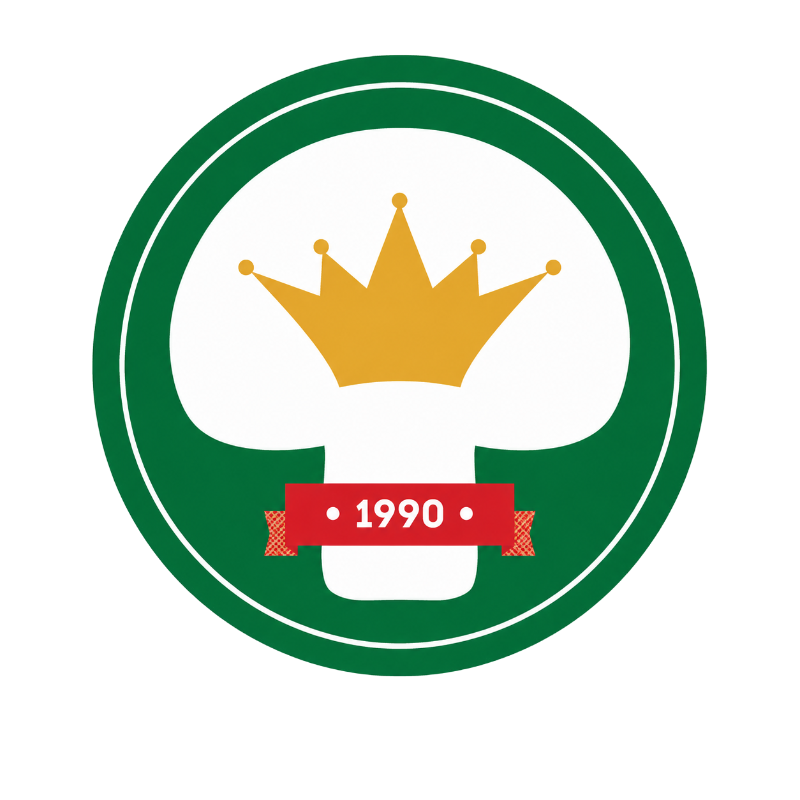
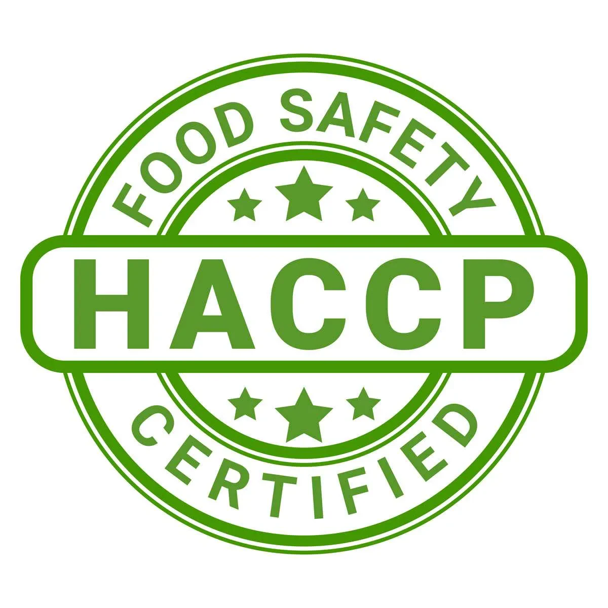
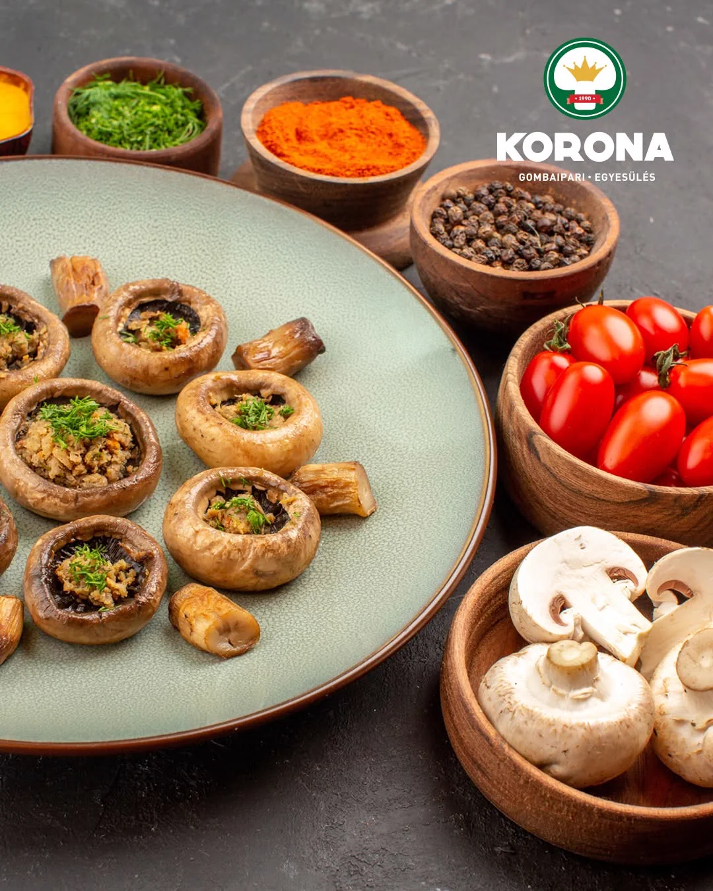
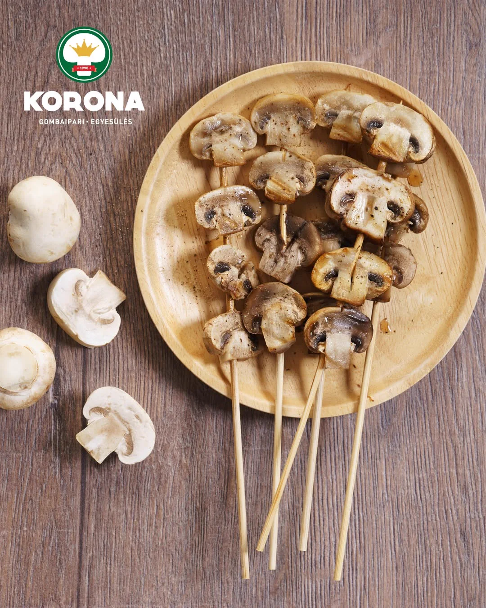

Est. 1990
Demjén · Magyarország
Saját
komposzt
komposzt
12 ország
export
export



Nem sztori, hanem mindennap: a termesztőháztól a te asztalodig ugyanazzal a gondossággal, amit 1990 óta ismerünk. Ez a Korona gomba élete — nyersen, grillen, üvegben, bárhogy szereted.


Független auditok · Évente megújítva
Öt független rendszer ellenőrzi, amit csinálunk, a komposzt alapanyagától a lezárt konzervig. Nem ígéret, hanem auditált, évente felülvizsgált papír.
Global G.A.P.
Mezőgazdaság
International Featured Standards
Feldolgozás
Veszélyelemzés & Kritikus Pontok
Élelmiszer-biztonság
Biokontroll
Bio termesztés
Risk Assessment on Social Practice
Szociális felelősség






Akikkel együtt dolgozunk
Kereskedelmi láncok, technológiai beszállítók és tanúsító szervezetek — a komposzttól a polcig.


1990 óta
Családi vállalkozások szövetségéből Közép-Európa egyik vezető gombaipari csoportosulása — négy évtized, öt nagy lépés.
Komposztüzem, az első termesztőházak és a konzervüzem Demjénben.
DemjénSteril csíraüzem és labor — Magyarországon elsőként üzemi méretben.
Le ChampionA régió első III. fázisú komposztüzeme — a teljes vertikum a kezünkben.
Komposzt60 holland típusú ház — az ország legnagyobb termesztőfelülete.
45 000 m²Zárt komposztcsarnok és vezérelt biofilter a szagterhelés ellen.
KörnyezetHeti 1 100 tonna komposzt, 45 000 m² felület, 12 exportpiac.
Közép-Európa